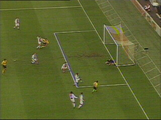
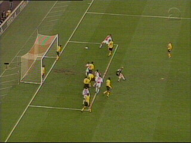
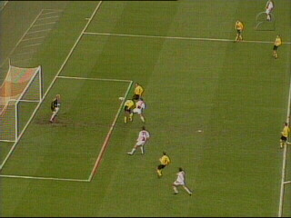
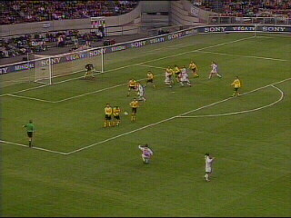
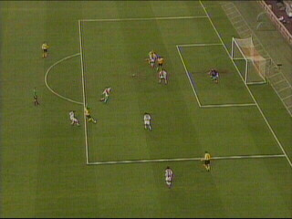
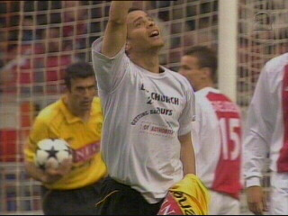
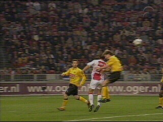
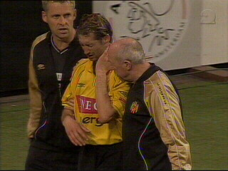
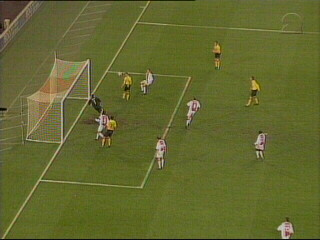
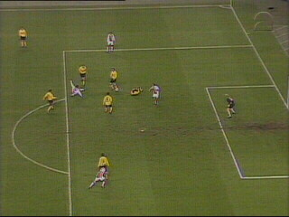

|
Ajax - Roda JC (4-2) 19 april 2003 |

Mooie voorzet van Sergio op Vicelich die de bal
maar hoeft in te tikken. Hij wordt echter onder-
uitgetrokken door Sneijder. Arbiter Van Egmond
ziet er geen strafschop in.

In de 16e min. scoort Ibrahimovic uit een corner.

Twee minuten later kopt Van der Vaart 2-0 in.

Sneijder scoort in de linkerbovenhoek uit een
vrije trap. Na 27 min. is het al 3-0.

In de 33e min. scoort Sergio een prachtig doel-
punt in de kruising: 3-1.

Hij bedankt God.

Bij een luchtduel botsen Senden en Vd Vaart op
pijnlijke wijze.

Senden moet er verduizeld uit en wordt vervangen
do moet er verduizeld uit en wordt vervangen
door Rudge. Vd Vaart loopt hersenschudding op.

In de 80e min. kopt Sergio 3-2 binnen.

Boukhari schiet Ajax twee minuten later naar de
4-2 eindstand.
© Koempels
Pleasure Dome